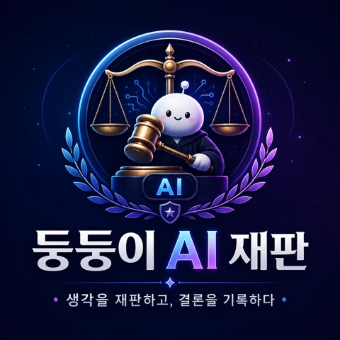

🔥 둥 검사 · 명제 반대
- 기초 지식이 없으면 AI의 답을 검증하거나 맥락에 맞게 해석할 수 없다.
- 비판적 사고와 윤리적 판단도 충분한 배경지식 위에서만 작동한다.
- 지식을 경시하면 학생이 판단 책임을 AI에 넘기는 위험이 커진다.
“지식은 낡은 짐이 아니라, AI의 오류를 알아차리기 위한 최소한의 내부 기준이다.”
하나의 명제를 검사와 변호사가 다투고, 판사가 쟁점을 정리해 내린 사고 실험형 판결입니다.

AI 시대에 단순 암기와 정보 축적을 교육의 중심에 두는 방식은 그 효용이 크게 줄어듭니다. 그러나 학생이 AI의 답을 검증하고, 맥락을 이해하며, 스스로 판단하기 위해서는 기초 지식과 구조적 이해가 여전히 필수적입니다.
따라서 교육의 중심은 ‘많이 아는 것’에서 ‘필요한 지식을 이해하고 연결하며 검증하는 것’으로 이동해야 합니다.
AI가 언제든 답을 제공하는 시대에도, 학생이 반드시 머릿속에 가지고 있어야 할 지식은 어디까지일까요? 그리고 ‘외우는 능력’과 ‘판단하는 능력’은 실제로 얼마나 분리될 수 있을까요?